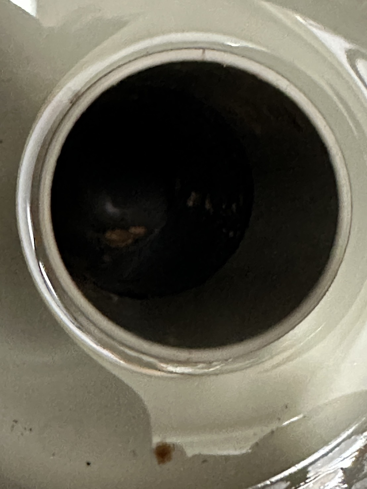

水と電気のプロフェッショナル。
暮らしと工場のインフラを支える。
一般家庭のトラブルから工場の大型設備点検まで。確かな技術でお応えします。

一般家庭のトラブルから工場の大型設備点検まで。確かな技術でお応えします。
水道工事から電気工事、定期的な設備点検保守まで、住まいや工場のインフラをワンストップで解決します。
「蛇口の水漏れ修理」といった身近なお困りごとから、「工場の高圧電気設備・保守点検」などの大規模案件まで対応可能です。
地元の皆様の「困った」にフットワーク軽く駆けつけます。施工後のアフターフォローもお任せください。
一般住宅のキッチン・トイレの水漏れ修理から、工場・店舗の給排水管引き込み、各種配管インフラの構築・修繕を行います。
コンセントの増設、照明器具（LED化）の交換、工場の動力電源工事や高圧受電設備のトラブル対応まで幅広くカバーします。
ビルや工場の各種空調設備、給排水ポンプ、電気系統の定期点検を行い、トラブルを未然に防ぐ保守管理を徹底しています。
弊社では、地域の皆様の憩いの場となる飲食店舗の運営も行っております。設備のプロとしての衛生・環境管理を活かした安心・安全な食をご提供します。
| 会社名 | 齊藤設備 |
|---|---|
| 代表者 | 齊藤 ○○ |
| 所在地 | 〒000-0000 〇〇県〇〇市〇〇町1-2-3 |
| 事業内容 |
・水道施設工事、給排水衛生設備工事 ・一般電気工事、電気通信工事 ・ビル・工場等の設備保守点検、メンテナンス ・飲食店の経営・運営 |
| 対応エリア | 〇〇市を中心とした周辺地域（ご相談に応じてフットワーク軽く伺います） |
※このホームページは制作練習用の架空のサイトです。記載されているサービス、金額、店舗情報などはすべてサンプルのため、実在する人物・団体・店舗とは一切関係ありません。